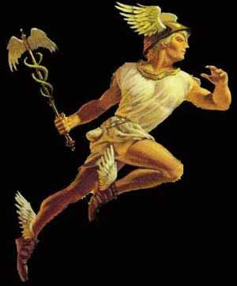
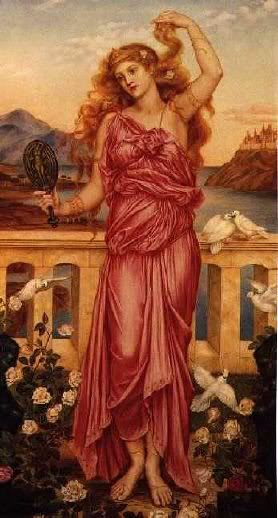
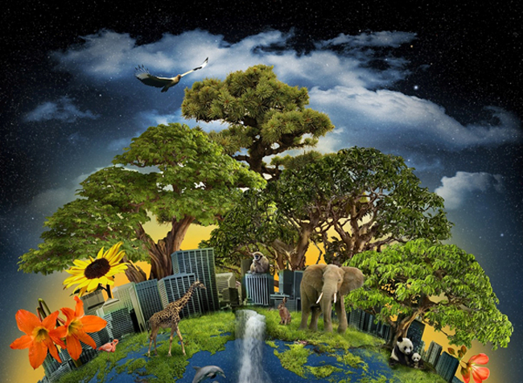
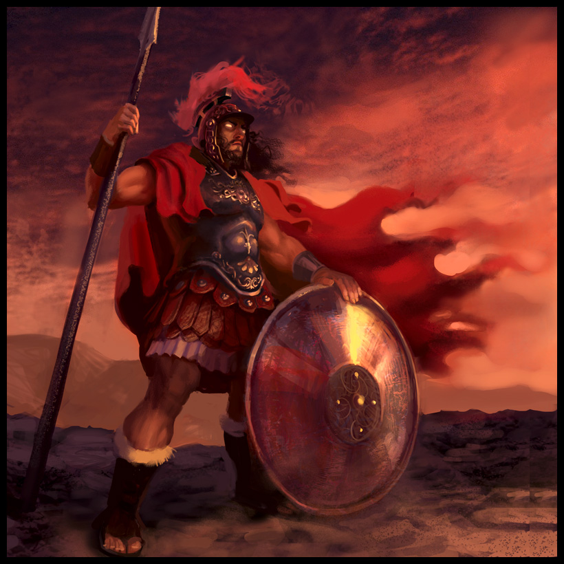
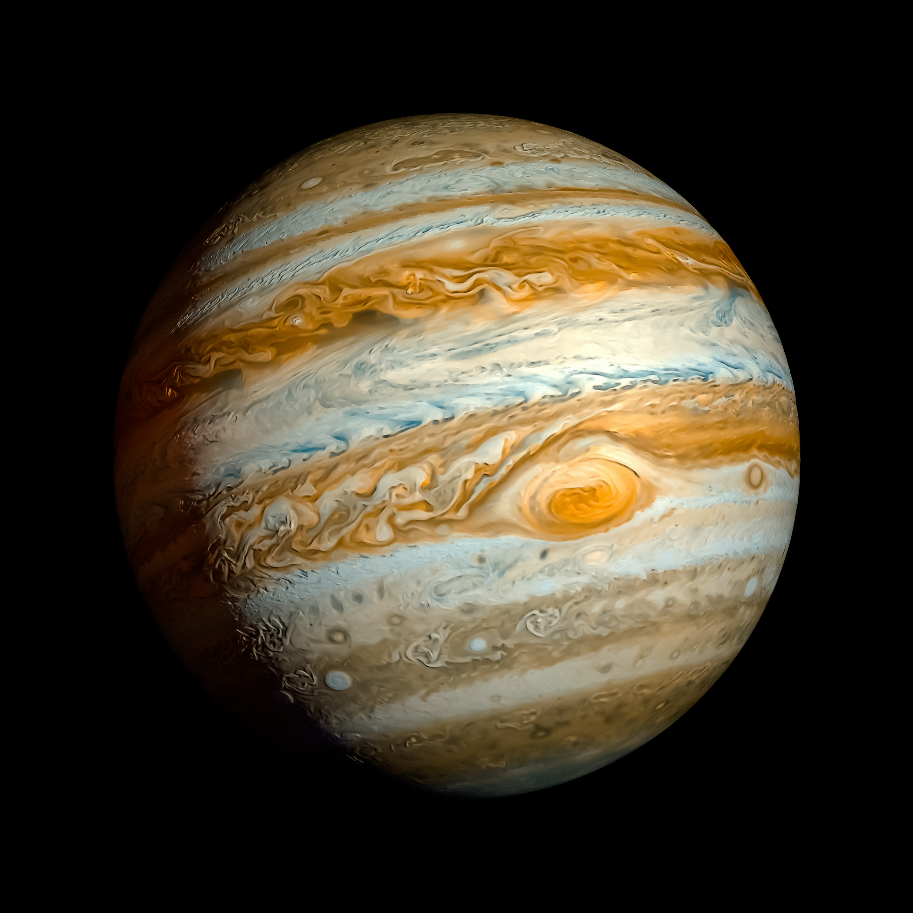
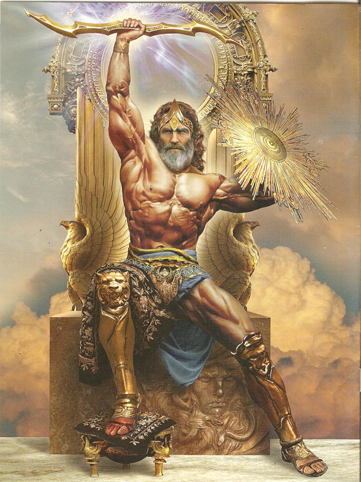
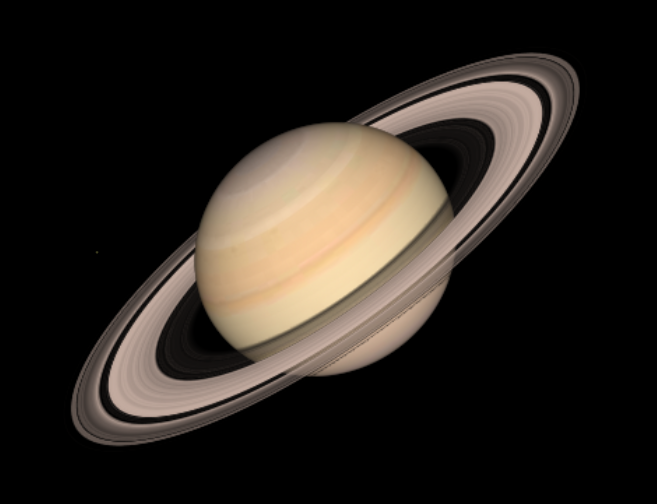
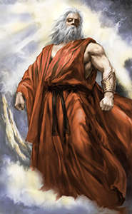
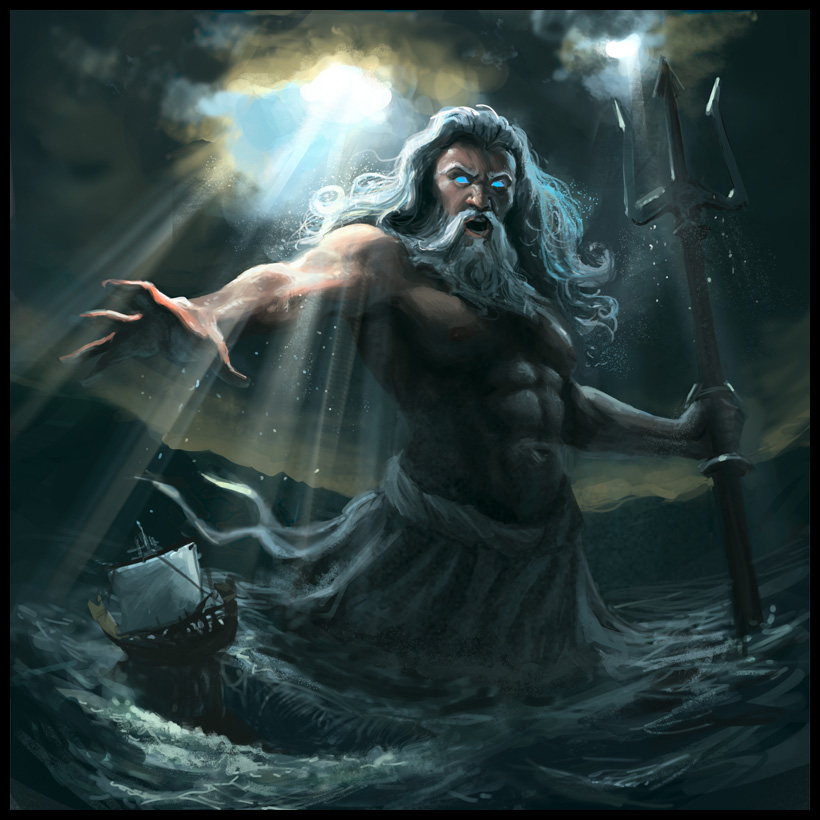

Asteroids, Comets, and Dwarf Planets
Mercury is the closest planet to Sun, and also the smallest. Being the closest means that it has the shortest orbital period of any planet; 88 Earth days. It is in gray colour and is dotted with craters since it lacks an atmosphere. Having no atmosphere also means that it can’t trap any of the heat it receives from the Sun, so when its nighttime it becomes extremely cold. Studying Mercury is very difficult for astronomers, because it is so close to the Sun that it is difficult to reach without our spacecrafts bruning up. It is named after the Roman deity Mercury, the messenger to the gods. This is because of how fast Mercury moves around the Sun, and how the god Mercury could move quickly from place to place.
4.

5.
Venus is the second planet from the Sun, and has a similar but smaller size to Earth. This is why it is sometimes called Earth’s twin. It has an orbital period of about 225 Earth days, but here’s the cool part. It spins so slow that its day actually longer than its year; 243 Earth days. But because of its retrograde rotation, (meaning that it spins the opposite direction of how it orbits) the sunrise is ”only“ 117 days long. Venus has a very thick atmosphere, which is why it is the hottest planet in the Solar System, even beating the closest planet to the Sun Mercury. Temperatures can reach up to 465 degrees Celsius (843 degrees Fahrenheit). This heat can set on fire basically anything, landing any probes there is very difficult. It is named after the Roman goddess of love and beauty.
6.

7.
As you may all know, Earth is our home planet and it is where we live our lives today. It is the third planet from the Sun, and has an orbital period of, of course, 365 days. Earth is the largest Inner planet in the Solar System. The Earth is conveniently placed in the so-called ”Goldilocks“ Zone", meaning that the temperature is not too hot but also not to cold. This allows for life to form, water to flow, and oxygen to be readily available. So, this is the only known planet to contain freshwater and life, at least until now. Earth has a satellite, unlike Mercury and Venus, and is intelligently named Moon. Our planet also has a thick atmosphere and a magnetic field, which protects us from UV rays and asteroids that can harm us. It is the only planet not to be named after any Roman gods or goddesses.
8.

9.
Mars, also known as the red planet, is the fourth planet from the Sun, and the second smallest planet in the Solar System. It has an orbital period of 687 Earth days, and has a cold and thin atmosphere. It is in red colour because of the iron oxide that is in the Martian soil. On the topic of Martians, there is NO intelligent life on Mars that we have detected, and it is very unlikely to survive in the harsh weather anyways. The good news is that scientists have found evidence of life that existed a long time ago, which include water beds and paths where water once flowed. All this makes Mars the most likely destination for space inhabitation, though it is incredibly difficult to travel there still. Mars actually has two satellites, Phobos and Deimos, which are just asteroids from the Asteroid Belt that got caught in its gravity. Mars was named after the Roman god of war, because its red colour resembles blood.
10.

11.
Jupiter is the 5th planet from the Sun and is the largest. So large that all of the other planets fit inside it. This planet has an orbital period of almost 12 Earth years. It is a gassy planet with bands of different coloured gases, so it is part of the Outer Planets group. Being a gassy planet, like the other Outer Planets we will talk about later, it has no solid surface to walk on. Because of its large size and its proximity to the Asteroid Belt, it has the most satellites of any other planet, at least 63 to be exact. One of them Ganymede, which is not only the largest moon in the Solar System, but also is larger than even Mercury. Another moon, Europa, has a frozen crust mostly made up of water ice, indicating potential lifeforms underneath the surface. Jupiter also spins the fastest, clocking at a little under 10 hours in a day. This gives it a slight bulge at the equator. Despite all these cool features, it is not a place you would want to visit, because it contains a large storm pattern called The Giant Red Spot, which contains wind speeds of up to 680 kph (425 mph). The Romans named it after their god Jupiter.
12.
13.
Saturn is the sixth planet from the Sun and has an orbital period of about 29 Earth years. It has a yellowish-brown colour to it, and the well-known rings to it. The other gas giants have rings as well, except they aren’t as noticeable as Saturn’s. Its rings are mostly made of rock and ice, and scientists have given names to each band in the ring. A cool thing about Saturn is that it is the least dense planet in the Solar System, since it is mostly made up of helium and hydrogen. This means that if you were to place it on a tub of water, it would FLOAT. Saturn has at least 62 moons, and the largest of them is Titan. It, like Ganymede, is slightly larger than Mercury, but has a thick, nitrogen-filled atmosphere that might be like Earth long ago. Its atmosphere is 10 times bigger than Earth's, and hence the planet has a possibility of containing life. Saturn is named after the Roman god of agriculture.
14.
15.
Uranus is the seventh planet from the Sun, and has an orbital period of about 84 Earth years. It has a light blue colour, and is a gas giant like Jupiter, Saturn, and Neptune. It is similar in size and composition to Neptune, which we will talk about later. I know that its name is a joke in astronomy now, and I guess it is kind of funny... Anyways, Uranus’s cool feature is the axis of its spin points to the Sun, so it rotates on its side. This is probably caused by a major collision with a large object which tilted it on its side. This unusual tilt gives rise to extreme seasons roughly 20 years long, meaning that for nearly a quarter of the Uranian year, equal to 84 Earth-years, the sun shines directly over each pole, leaving the other half of the planet to experience a long, dark, cold winter. Uranus has 27 known moons, and its largest being Oberon and Titania. Uranus is the only planet whose name is derived from a figure from Greek mythology, from the Latinised version of the Greek god of the sky Ouranos.
16.

17.
Neptune, also known as an ice giant, is the eighth planet from the Sun and the farthest as well. It is in blue colour and is the coldest planet in the Solar System, as you may expect. Its orbital period is a mind-boggling 165 Earth years. Despite how little sunlight it receives from the Sun to drive its atmosphere, winds can reach up to 2400 kph (1500 mph), which is the fastest ever recorded in the Solar System. Neptune was first discovered by noticing the irregularities in Uranus’ orbit, which indicated a large celestial object that was moving it. Like Jupiter, it has a large storm pattern called The Great Dark Spot. This storm was first tracked by Voyager 2, but faded and reappeared many times over the decade. Neptune has 14 known moons, the largest being Triton. This moon has temperatures reaching about -235 degrees Celsius (-391 degrees Fahrenheit), making it one of the most coldest places in the Solar System. Neptune is named after the Roman god of the sea, known as Poseidon in Greek.
18.

19.
© Akshay Ramasubramanian 2017